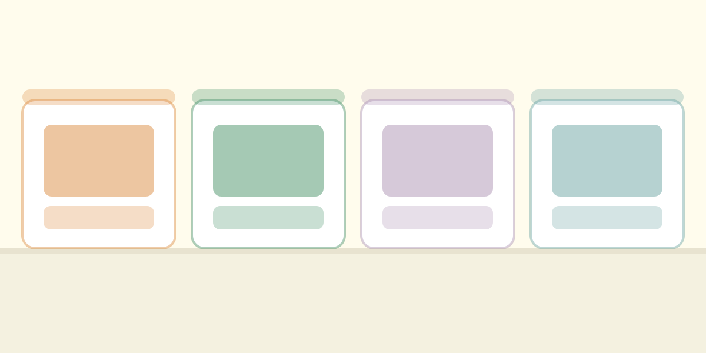

Viandas saludables · Paraná, Entre Ríos
Vos ocupate de tu día.
Nosotros, de resolver qué comer.
Comida casera, equilibrada y rica, lista para llevar. Elegís el menú de la semana y te lo llevamos a tu casa o a tu trabajo, o lo retirás por donde te quede cerca.
Aurea Mediocritas — la justa medida entre dos extremos.

Cuándo hay vianda
De lunes a viernes, cocinado esa misma mañana
Los pedidos se arman en la web y se confirman por WhatsApp.
Para tu equipo
El almuerzo de la oficina, resuelto
Armamos un plan a la medida de tu equipo. Los menús que cada uno prefiera, entrega en el horario del almuerzo y una sola coordinación por semana.
- Planes semanales y mensuales
- Menús distintos para cada persona, en la misma entrega
- Opciones vegetarianas y de alto contenido proteico
- Entrega en tu oficina, al mediodía
¿Empezamos esta semana?
Armá tu pedido en un minuto. Lo confirmás por WhatsApp y listo.